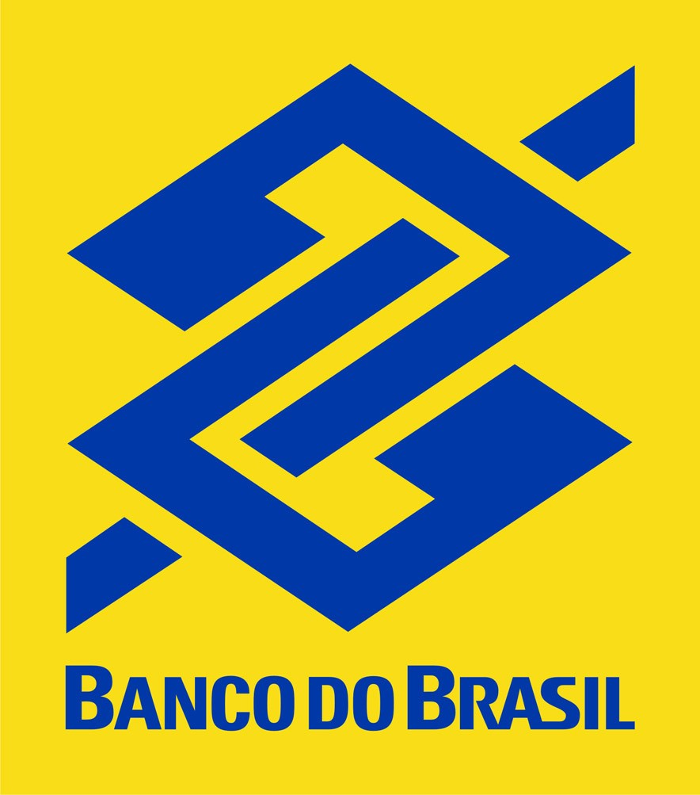
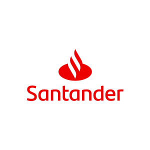
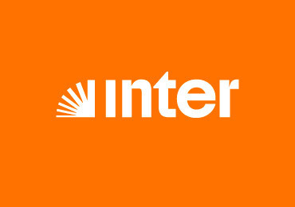
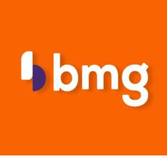
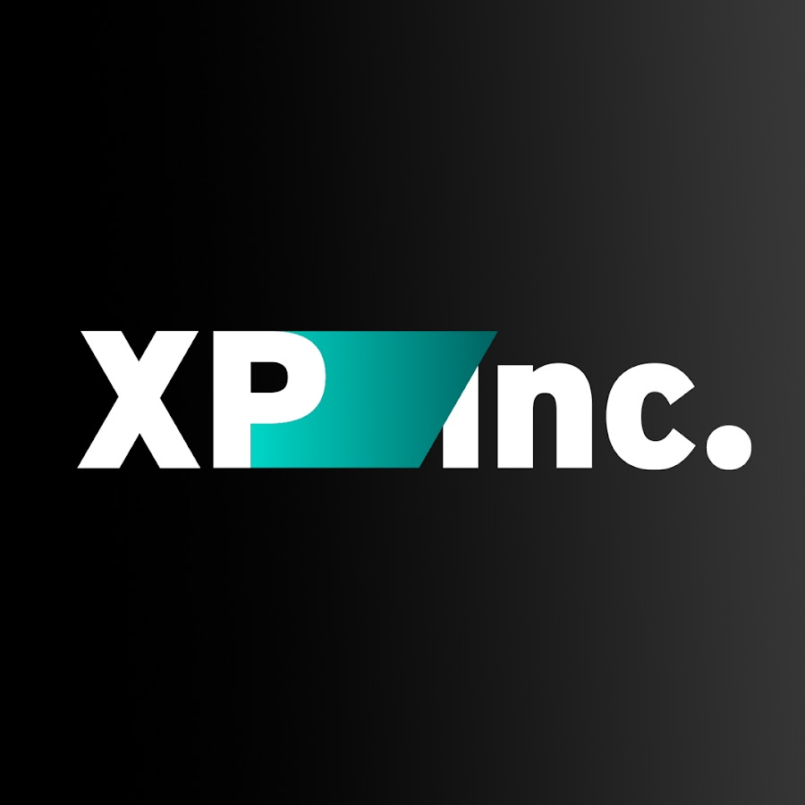
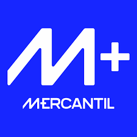

Dashboard Power BI:
Análise do Mercado de Ações das
Instituições Financeiras Brasileiras
O setor bancário brasileiro possui particularidades regulatórias e contábeis que exigem um olhar especializado. Este ecossistema interativo foi desenvolvido para subsidiar a tomada de decisão de investidores e analistas, consolidando indicadores de Valuation, Risco e Retorno em uma única interface.
O projeto transforma dados brutos e descentralizados (BCB/CVM) em inteligência de mercado, permitindo comparações peer-to-peer e análises temporais de longo prazo. Em breve, também serão publicadas análises de performance trimestral das instituições bancárias com base nos insights deste dashboard.






4 telas com navegação intuitiva. Use as setas ou clique nos pontos para navegar.


O diferencial deste projeto é o pipeline completo — da coleta automatizada à visualização interativa.
Mais de 20 indicadores organizados em quatro dimensões analíticas. Clique nas abas para explorar cada dimensão.
O diferencial deste dashboard não está apenas no volume de dados, mas na forma como a informação é consumida.
Tooltips Dinâmicos funcionam como um analista virtual. Ao passar o mouse sobre uma instituição:
- Contexto Comparativo — posição do ROE em relação à média setorial, com narração automática
- Micro-Rankings — posição no ranking sem sair da visão atual
- Glossário Contextual — definições de Basileia, P/VP e outros conceitos aparecem ao passar o mouse
Indicadores visuais de variação YoY e QoQ com setas dinâmicas de direção e cor. O usuário identifica em segundos se a trajetória de crescimento está acelerando ou perdendo fôlego — sem cálculos mentais.
O dashboard permite a inversão de filtros para analisar o ecossistema, não apenas um banco. A tela de rankings identifica os "outliers" — instituições com alta rentabilidade mesmo com estruturas de custo enxutas.
Como visualizar:
- Baixe o arquivo RAR completo pelo botão abaixo
- Extraia a pasta
dashboard_brbanksperformance - Não altere a organização dos arquivos e subpastas
- Abra o arquivo
.pbixe atualize as fontes de dados — ou visualize os screenshots em/assets
Disponível no repositório do GitHub.
Apresentação em vídeo
Em breveEm breve disponibilizarei um vídeo demonstrando o dashboard em funcionamento, com navegação pelas 4 telas e análise dos principais KPIs.